几丁质甲壳覆盖的孢体，背部装甲板可抵挡首轮火力；口器持续滴落酸液，站桩喷吐扇形毒液并在落点留下腐蚀毒云，逼迫玩家走位。
| 行为 | walkvenom |
| 生命 / 移速 | 95 / 46 |
| 攻击 / 听觉 / 警觉 | 10 / 300 / 420 |
| 体型倍率 | 1.40（厚甲） |
| 毒云 | 半径52 · 3.0s · 10/s |
| tint / 血色 | 近白 1.0 / #948f1f |
| 发光轮廓 | #D8E25A 酸蚀黄绿 |
| 刷出权重 | tier0 0.42 · +0.20/档 |
半埋潜伏，仅露脊刺；玩家进入警觉半径后破土高速突袭，低血高伤，是「冲脸破解远程」打法的反制。常与腐蚀孢形成夹击。
| 行为 | ambush |
| 生命 / 移速 | 34 / 130 |
| 攻击 / 听觉 / 警觉 | 12 / 380 / 360 |
| 体型倍率 | 1.28（瘦长） |
| tint / 血色 | 近白 1.0 / #4d2a78 |
| 发光轮廓 | #C9A0FF 亮紫 |
| 刷出权重 | tier0 0.40 · +0.16/档 |
悬浮菌伞状孢体，缓慢漂移并持续散播发光孢子；死亡时炸开一片持久毒雾，封锁走廊与掩体后方，制造「不速清场」的压力。
| 行为 | miasma |
| 生命 / 移速 | 70 / 50 |
| 攻击 / 听觉 / 警觉 | 8 / 260 / 320 |
| 体型倍率 | 1.35（漂浮） |
| 死亡毒雾 | 半径90 · 4.5s · 11/s |
| tint / 血色 | 近白 1.0 / #48a866 |
| 发光轮廓 | #7DFFA8 荧光绿 |
| 刷出权重 | tier0 0.36 · +0.18/档 |
渊巢的终极备份体：深渊巨口内腔生物荧光青绿，触须缠裹。冲锋更频、弹幕更密、召唤更众——召唤的正是蚀甲孢。母巢孢之后最凶险的单挑。
| 行为 | boss |
| 生命 / 移速 | 5200 / 54 |
| 攻击 / 听觉 / 警觉 | 24 / 1000 / 1000 |
| 体型倍率 | 3.6（巨型） |
| 冲锋 | 间隔2.6s · ×5.6 |
| 技能 | 弹幕18 · 喷息9 · 召唤5 |
| 召唤体 | 蚀甲孢 Corroder |
| tint / 血色 | 纯白 1.0 / #801a6b |
| 发光轮廓 | #6EF2C4 深渊青绿 |
| 登场延迟 | 第二波开始后 14s |
| 得分 | 900 |
由 agnes-image 文生图产出，白底便于后续去背；四张分别对应上面三怪一王，配色与设定稿一致。
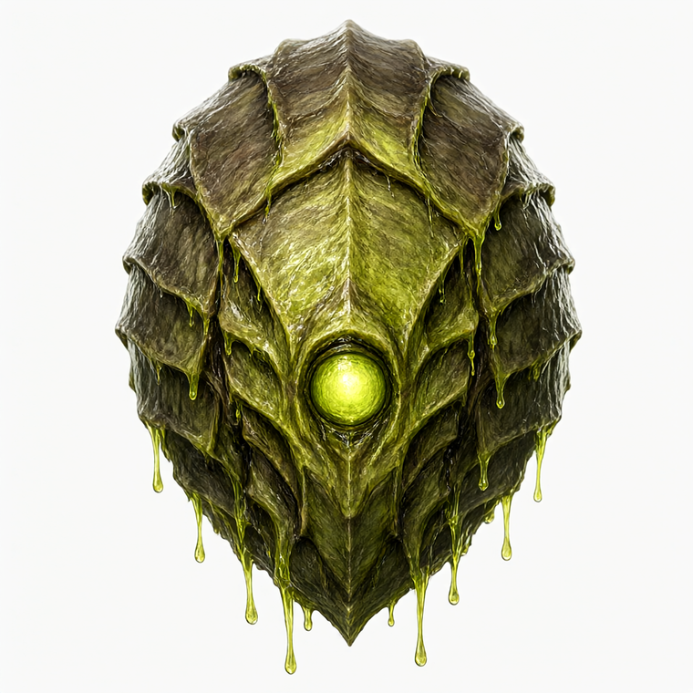
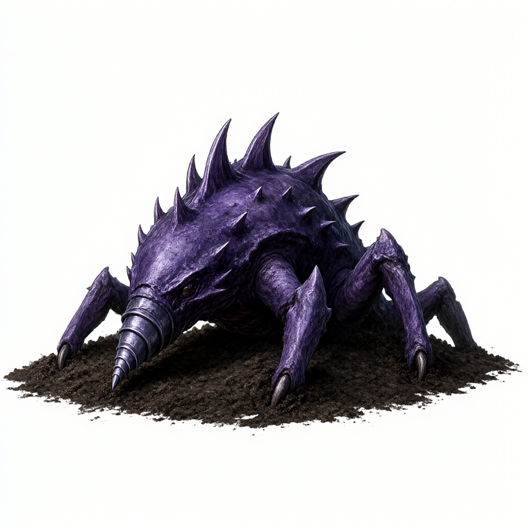
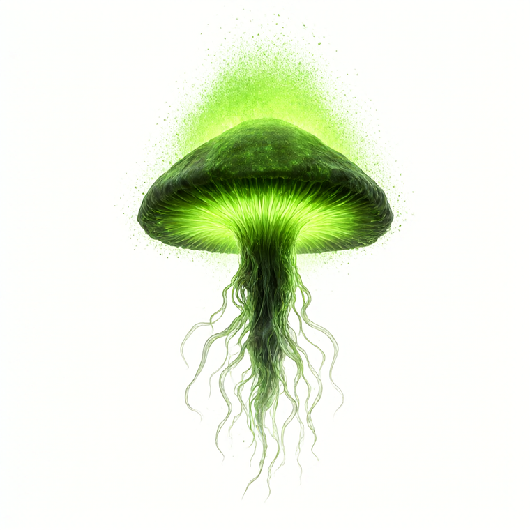
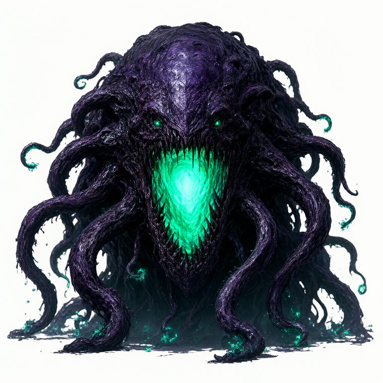
从设计到代码/资源的一一对应：
数据 assets/data/enemy_corroder.tres · enemy_burrower.tres · enemy_bloom.tres · enemy_abyss.tres
贴图 assets/characters/enemy_*.png（agnes 概念图 → make_sprites.gd 去白底 → polish_wave2_sprites.py 提亮 + 烘焙亮轮廓）
波次 scripts/enemy/WaveMode.gd — 45s 铺垫 → 第一波 BOSS 击溃 → EventBus.boss_defeated → 弹出过渡卡 → 第二波分批刷怪 + 14s 后召唤渊噬孢
UI scripts/ui/WaveCard.gd + scenes/ui/WaveCard.tscn — 「进入下一波 / WAVE 2」提示卡
接入 scenes/world/Arena.tscn — 关闭 Spawner 计时精英（elite_times=[]），挂入 WaveCard 与 WaveMode
概念图经 make_sprites.gd 泛洪去白底 → 归一化 → polish_wave2_sprites.py 提亮与烘焙轮廓 → 游戏精灵；下方为 1152×648 打磨后实机截图。
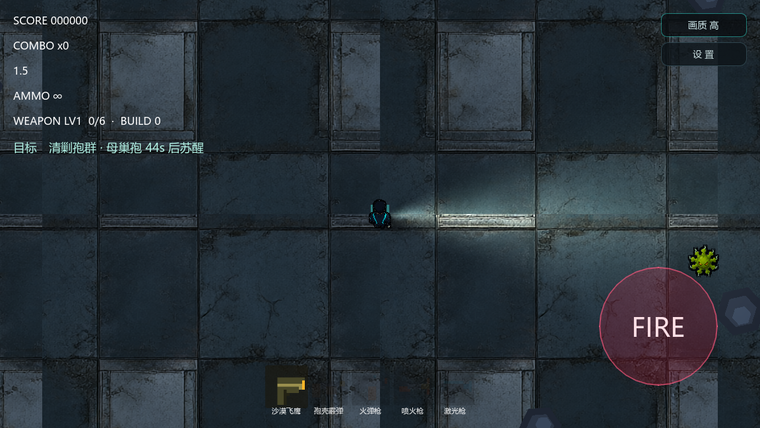
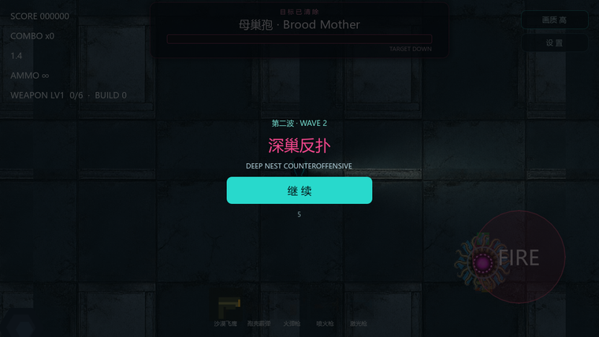
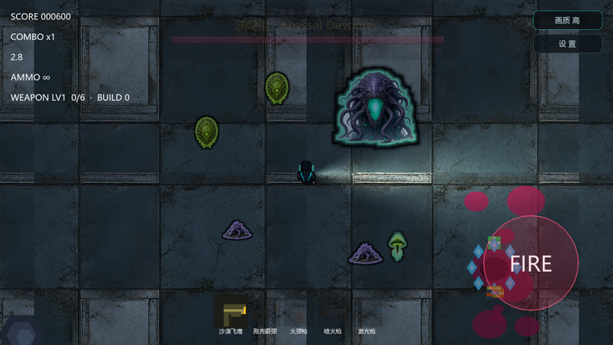
验收 tests/probe_wave.gd 35 / 35 PASS（完整链路 + tint/体型/权重参数）；tests/probe_wave_timing.gd 21 / 21 PASS（补强时序分支，见下节）。
截图 tools/shot_wave2.gd / shot_warmup.gd 带窗口实机取证（headless 取不到 framebuffer）。
打包 export_presets.cfg 排除 docs/*, tools/*, tests/*，APK 37.1MB → 32.05MB；4 张打磨后贴图的包内哈希与本地导入缓存逐一比对一致。
主探针为了跳过等待把铺垫期与 BOSS 延迟都置 0，链路能跑完，但三条新增逻辑其实从未被真正执行过。补一个独立时序探针覆盖它们。
手法 headless 单帧 delta 极小、靠墙钟等不完 45s，所以不硬等 —— 把内部计时器 set 到阈值前一点，让引擎真实的 _process() 走完剩余部分触发分支。
铺垫期 断言 _wave==0、无 BOSS、倒计时文案与 HUD 目标栏在生存模式可见且不遮挡；计时到点后自动进入第一波并召唤母巢孢。
分批增援 断言 6s 补怪真的执行（场上杂兵 6 → 10）、且此时 BOSS 尚未登场。
权重分布 采样 _pick_variant() 1200 次，新怪实际刷出占比 43.3%（打磨前约 16%），确认「第二波换了批怪」不是只改了配置数字。
顺带修的 UI Bug HUD.gd 原逻辑 _objective.visible = story and ...，生存模式目标栏恒隐藏 —— WaveMode 写的三段波次文案玩家一个字都看不到。现在生存模式也显示，位置挪到左上信息块下方 (20,210) 避开 SCORE/COMBO/AMMO 与顶部 BossBar。
顺序坑 铺垫期文案必须写在 _process() 而非 _ready()：Godot 子节点 _ready 先于父节点，Arena._ready() 里的 start_run() 会清空 objective_text。
首版实机截图暴露的问题：写实深色概念图在暗地面上糊成一团，玩家分不清哪只是哪只。诊断后做了针对性修复。
根因1 深 tint 二重压暗：Enemy._apply_visual() 用 spr.modulate = stats.tint 相乘染色（原本给白底简笔贴图用），而写实概念图已自带配色。渊噬孢原 tint (0.34,0.18,0.58) 乘上本就 avgLum≈51 的暗紫贴图 → 青绿巨口全灭。→ 4 张 tint 全部改近白，主题色交给贴图与轮廓。
根因2 运行时描边失效：Enemy.tscn 的 outline shader 是深黑色，深底配黑边＝无轮廓；且低画质档会被 Quality 整个关掉。→ 把主题色亮轮廓烘焙进 PNG 自身，任何画质档都可见。
根因3 体型过小 / 权重过低：scale_mult 0.95~1.15、刷出权重合计仅 0.31（walker 单只 1.0），第二波"换新怪"名不副实。→ 体型提到 1.28~1.40 / BOSS 3.6，权重合计提到 1.18，新怪成为第二波主力。
根因4 节奏：原实现开局立刻上 BOSS（玩家裸装）、弹卡后干等 25s、开场怪刷在 420~620px（视野外）。→ 加 45s 铺垫期；渊噬孢缩到 14s，中间 6s 补一批怪；开场刷怪收进 240~400px 视野内。
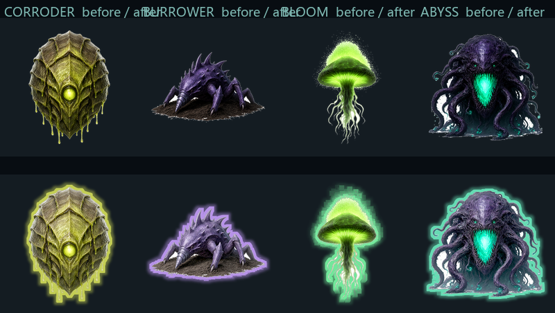
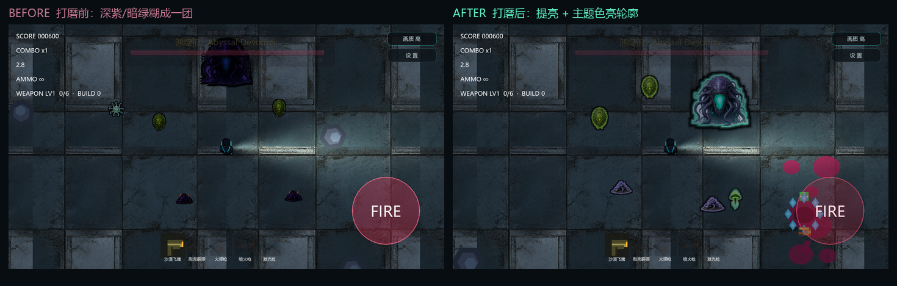
管线 gen_wave2.cjs → make_sprites.gd（去白底/归一化）→ tools/polish_wave2_sprites.py（gamma 提亮 + 烘焙亮轮廓，可复现，--dry 只报告指标）→ --headless --import。重跑 make_sprites 后必须补跑抛光脚本。
防回归 tests/probe_wave.gd 新增 17 项断言锁定 tint 近白、scale、权重、铺垫期与刷怪半径，合计 35 / 35 PASS。
此前所有敌人都是单张静止贴图，只有零星 tween（前摇染色 / 破土弹跳 / 死亡碎片）。本次补上完整的行走、攻击、受击动作。
选型 俯视角、屏幕尺寸仅约 40px、写实概念图风格。为 13 只怪各生成 4~8 帧逐帧图既难保 AI 出图一致性，又让资源与包体翻倍。改用程序化动画层 scripts/enemy/EnemyAnim.gd：纯数学变换、零新资源、零额外 draw call、低画质不掉帧，且能 headless 断言。
纪律 动画层只写 Sprite / Outline 的 scale・rotation・position，绝不碰 modulate —— 相乘染色 stats.tint 与 _flash_tint() 前摇染色由 Enemy 自己管，避免打架。描边层同步变换，亮轮廓始终贴合本体。
状态读取 持续姿态直接读现有状态机（_charge_state / _ranged_state / _ambush_state / velocity），不在每个状态切换点插桩，天然覆盖所有分支、不漏逻辑。瞬时事件走 pulse() 带衰减：开火 / 受击 / 破土 / 冲锋起手 / 技能释放 / 贴身撞击。
7 种风格 WALK（walker/corroder/spitter/sprayer 步态摆动）、RUN（runner 高频大幅）、AMBUSH（lurker/burrower 潜伏几乎静止 + 破土纵拉）、FLOAT（miasma/bloom 悬浮上下漂、不落地不摆）、SPLIT（splitter 果冻式高频挤压）、ELITE（brute 厚重低频）、BOSS（母巢孢/渊噬孢 低频威压 + 冲锋前摇压扁 + 突进拉长 + 技能咏唱收紧颤动）。静止时降为呼吸，速度越快步频越大。
池化 configure() / reset_for_reuse() 会重置相位与全部脉冲；tick() 首帧自检补 @onready 引用（ObjectPool 先 reset 再 add_child，那一刻 Outline 尚未赋值）。DeathBurst 改读稳定的 _base_scale，不受死亡帧压缩相位影响。
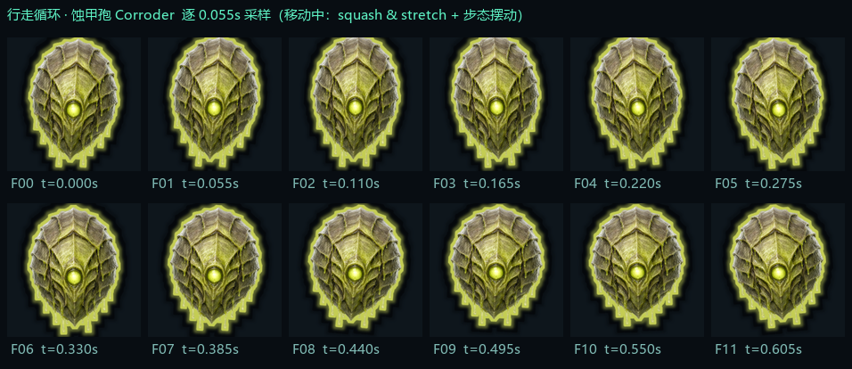
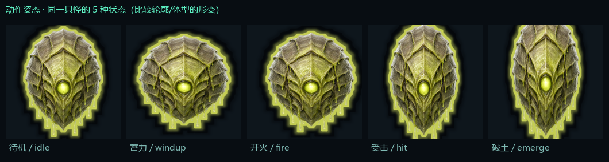
验收 tests/probe_anim.gd 52 / 52 PASS：13 只怪逐一采样 transform 时间序列证明「真的在动」、风格幅度有差异、描边同步、5 类脉冲生效、动画层不碰 modulate、池化复用归零。另用 tools/shot_anim.gd 带窗口逐帧取证，并用像素差确认帧间确实变化（行走 3~9 / 事件姿态 25~36）。
回归 主链路 35/35、时序 21/21 均未受影响，零脚本错误。